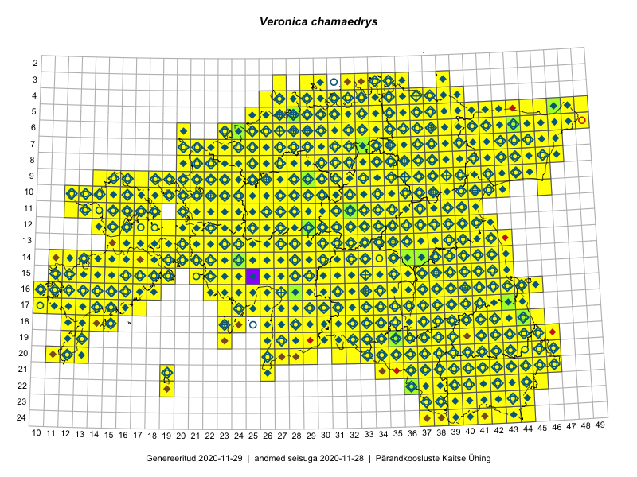

Veronica chamaedrys
Uuendatud: 2016-12-01
Kaardile koondatud taksonid: Veronica chamaedrys L.

Kaart põhineb 1424 kirjel, neist vaatlusi 1421 ja eksemplare 3.
Kuvatud viited 20 esimesele andmebaasikirjele, ülejäänud PlutoFis
- Malle Leht: 2015-05-22: : ala
- Malle Leht: 2015-05-16: : ala
- Tiit Hallikma, Toomas Kukk, Indrek Tammekänd: 2015-06-09: 12-28: ala
- Malle Leht: 2015-07-09: : ala
- Peedu Saar: 2015-05-09: 13-30: ala
- Peedu Saar, Timo Luhamäe: 2015-05-10: 12-31: ala
- Peedu Saar, Timo Luhamäe: 2015-05-10: 12-32: ala
- Peedu Saar: 2015-05-14: 09-43: ala
- Peedu Saar: 2015-05-14: 10-43: ala
- Peedu Saar: 2015-05-14: 10-42: ala
- Peedu Saar, Liina Oja: 2015-05-22: 19-30: ala
- Thea Kull: 2015-07-07: 16-40: ala
- Rein Kalamees: 2015-06-08: 05-32: ala
- Peedu Saar, Liina Oja: 2015-05-20: 18-27: ala
- Rein Kalamees: 2015-06-05: 05-32: ala
- Malle Leht: 2015-08-02: : ala
- Peedu Saar, Liina Oja: 2015-05-21: 16-24: ala
- Peedu Saar, Liina Oja: 2015-05-21: 16-25: ala
- Peedu Saar, Liina Oja: 2015-05-20: 18-28: ala
- Peedu Saar, Liina Oja: 2015-05-20: 18-26: ala